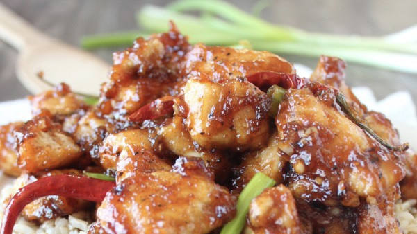

GLUTEN FREE GENERAL TSO’S CHICKEN

INGREDIENTS
3 tbsp canola oil (divided)
¼ cup Gluten-Free Soy Sauce
2 tbsp rice vinegar
1 tbsp sriracha
2 tbsp honey
1 tbsp fresh garlic (crushed)
2 tsp fresh ginger (grated)
½ tsp chinese five spice
1 tsp crushed red pepper flakes
1 lb boneless skinless chicken breasts (sliced into large chunks)
½ cup cornstarch
½ tsp salt
½ tsp black pepper
8 small dried red chilies
¼ cup scallions (sliced)
INSTRUCTION
1. In a medium bowl, whisk 1 tbsp canola oil with the soy sauce,
rice vinegar, sriracha, honey, garlic, ginger, chinese five spiceand red pepper flakes. Set aside.
2. Toss the chicken breasts in the cornstarch, salt and pepper.
3. Add the remaining 2 tbsp canola oil to a large skillet over medium-high heat.
4. Add the chilies, then pour the sauce over the chicken and cook 2-3 minutes.
5. Add the scallions, cook an additional minute, remove from the stove and serve over rice.